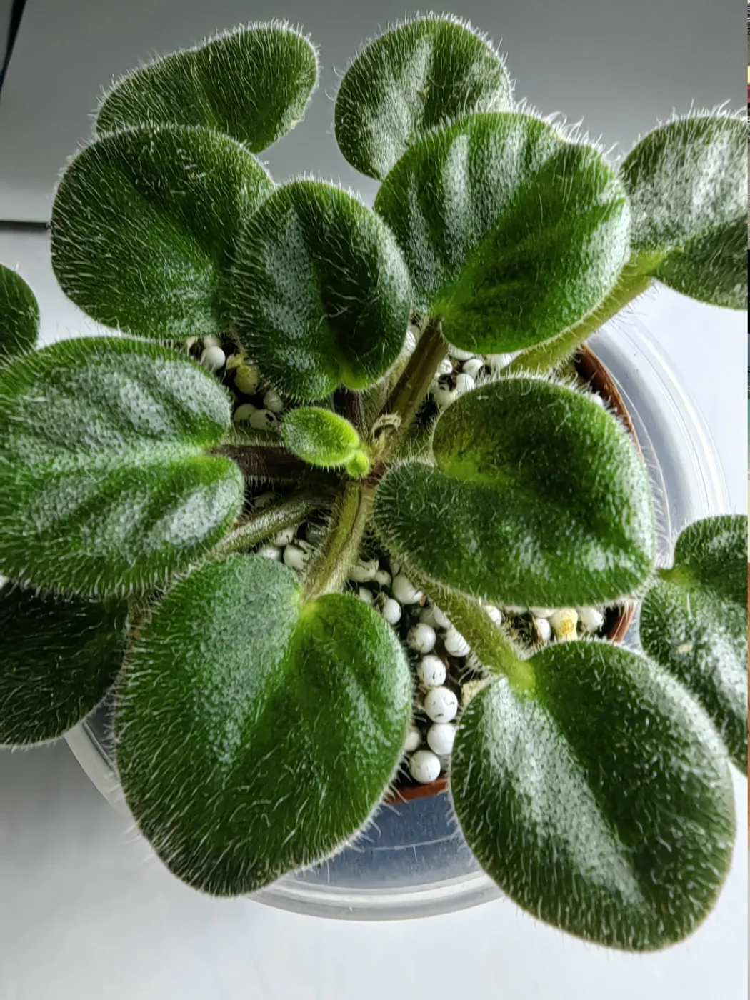
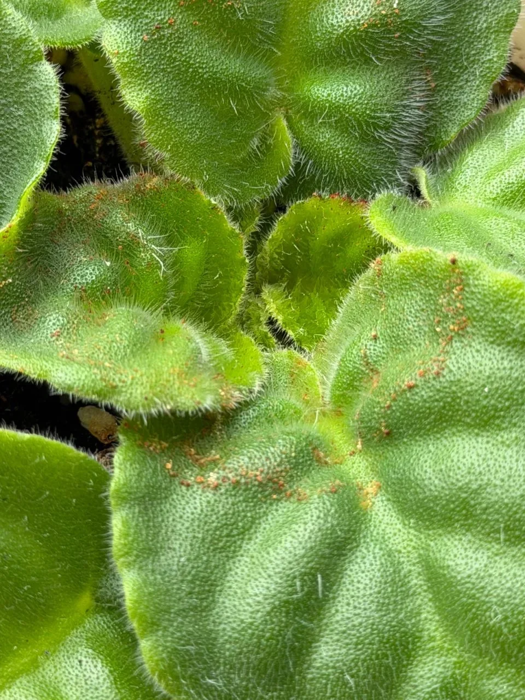

Самое время поговорить на тему — РЖАВЧИНА НА ФИАЛКАХ.
Ржавчина — это грибковое заболевание, которое активизируется осенью, когда ещё нет отопления, а уже прохладно, снижается температура в квартирах, повышается влажность, а это идеальные условия для развития грибкового поражения.
В это время нужно внимательно наблюдать за фиалками, осматривать их, чтобы не пропустить это коварное заболевание.
Выглядит ржавчина так, будто на листочках крупинки засахаренного мёда рыжего цвета. Потом листочки засыхают, их съедает ржавчина.
Очень важно не пропустить этот момент, не допустить процессу зайти далеко и потерять центр фиалки.
Страдает, как правило, молодая фиалка, ослабленная, и именно центр розетки, молоденькие листочки.
В это время нужно внимательно следить за поливом, не переувлажнять грунт. Если фиалка стоит на фитильном поливе и вы заметили признаки ржавчины, снимите с фитиля и просушите грунт.
Условия нормализуются и ржавчина проходит. Здесь главное вовремя увидеть и принять меры, чтобы не потерять середину розетки.
Ещё, я заметила, что ржавчина может появиться, когда рано молодую фиалку поставить на фитильный полив, когда у неё ещё мало корней и они не справляются с повышенной влажностью.
Взрослые, здоровые фиалки ржавчиной не поражаются, у них хороший иммунитет и они, как правило, справляются с этим неприятным заболеванием.
Эта статья для новичков, как говорится — предупреждён, значит вооружён.

